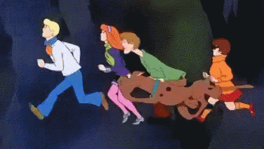

Cliccare sulle immagini
"Scooby-Doo" è una serie animata di mistero e avventura che segue un gruppo di amici composto da Fred, Daphne, Velma, Shaggy e il loro cane parlante Scooby-Doo
mentre risolvono misteri apparentemente soprannaturali. Il gruppo, conosciuto come "Mystery Inc.", viaggia in diverse località a bordo del loro furgone, la "Mystery
Machine".Ogni episodio tipicamente segue questo schema: la Mystery Inc. arriva in un nuovo luogo, spesso abbandonato o isolato, dove si verificano eventi strani o
inquietanti che sembrano coinvolgere fantasmi, mostri o altre creature soprannaturali. Il gruppo inizia a indagare, parlando con i testimoni e raccogliendo indizi.
Durante l'indagine, sono spesso inseguiti dal mostro o fantasma, che cerca di spaventarli.Alla fine, la squadra riesce a catturare il mostro o fantasma, rivelando che
si tratta in realtà di una persona in costume. Il colpevole è di solito un personaggio introdotto all'inizio dell'episodio, con un motivo nascosto per spaventare le
persone. Il colpevole confessa i suoi crimini e spiega come ha creato l'illusione soprannaturale.
L'episodio si conclude con la squadra che risolve il mistero e Scooby-Doo che riceve un premio per il suo aiuto. La serie è caratterizzata da un tono leggero e umoristico, nonostante i temi di mistero e "orrore". Le dinamiche tra i
personaggi e le gag ricorrenti, come Scooby e Shaggy sempre affamati e facilmente spaventati, sono parte integrante del fascino della serie. "Scooby-Doo" è diventato
un'icona della cultura popolare, con numerose incarnazioni, film e spin-off nel corso degli anni.
